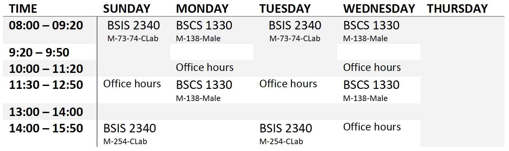

I teach the following subjects at Dar Alhekma University (Fall 2023-2024):
- BSCS 3345 Human Computer Interaction,
- ICTC 1302 Information and Computing Technology Concepts,
- and BSCS 4390 Advanced Applications Programming
BSCS 3345 Human Computer Interaction
Semester Credit Hours: 3 (3, 0)
Course Description: This course focuses on designing, implementing, and evaluating user interfaces of computational systems to enhance the interactions with human activities. It covers user-centric designing, rapid prototyping and experimentation, user interface standards, cognitive and social models. It also covers interaction designs, Graphical User Interfaces (GUI) principles and visual design tools. The course illustrates the designing of Human Computer Interaction (HCI) on webpages, business applications, mobile applications, games, and other computer applications.
Prerequisite Courses: BSCS 2355 Object-Oriented Programming
Student Learning Outcomes: Upon completion of this course, students are able to:
- Design international user interface design standards.
- Discuss the latest visual design tools to create visual content.
- Discuss the social and cognitive in Human-Computer Interaction during software design and plan stages.
- Examine the creation of Human Computer Interaction (HCI) webpages, E-Commerce, and mobile applications.
- Use rapid prototyping and experimentation techniques to gather (and document) user responses.
- Implement Graphical User Interfaces (GUI) programming concepts including event handling and constraint-based layout management.
- Design Human Computer Interaction (HCI) on either business applications, games, or other computer applications.
Assigned Textbook:Preece, J., Sharp, H., & Rogers, Y. (2016). Interaction design: Beyond human-computer interaction. Chichester: Wiley. ISBN: 9781119020752
ICTC 1302 Information and Computing Technology Concepts
Semester Credit Hours: 3 (3, 0)
Course Description: This course focuses on the history of computer evolution and the role of computation in solving problems for cybersecurity, computer science, information systems, and information technology. It overviews computer hardware, software and information systems, as well as communication applications and security protocols. It also focuses on enhancing the problem-solving skills using problems analysis techniques, flowcharts and algorithms. This course will introduce foundation programming technique to students.
Student Learning Outcomes: By the completion of this course, the student should be able to:
- Describe the history and evolution of computers including contemporary trends.
- Describe key concepts related to ICT, devices, computer storage and software.
- Differentiate between the types of communications (internet, email, and social networks).
- Use online tools to learn collaboration.
- Solve problem using algorithms and flowcharts.
- Identify keywords and program structure.
- Define variables and constants of different data types.
- Use input and output statements
Textbooks / Resources:
- Main Textbook: Parsons, J. J., & Oja, D. (2018). New perspectives on computer concepts 2018: Introductory. Boston: Course Technology. ISBN 13: 978-1-305-95151-8
- Alternative Textbook: Parsons, J. J., & Oja, D. (2015). New perspectives on computer concepts 2014: Introductory. Boston: Course Technology. ISBN – 13: 978-1-285-09768-8
BSCS 4390 Advanced Applications Programming
Semester Credit Hours: 3 (3, 0)
Course Description: This course introduces the theory, design, techniques, practices, and languages used to develop software systems and applications with a focus on web-based client-server applications and mobile applications. It covers several advanced applications development environments including web development programming using HyperText Markup Language (HTML), Cascading Style Sheets (CSS), server database management technology such as Active Server Page (ASP), and cross-platform development. The course also emphasizes the development, design, and building of a variety of apps to reinforce learning and to develop real competency. Students are introduced to Object-Oriented programming techniques and Graphical User Interfaces (GUIs) using the C# programming language and then apply the skills to implement windows or web applications.
Student Learning Outcomes: By the completion of this course, the student should be able to:
- Identify the difference between web-based client server applications and mobile applications.
- Design a website with appropriate security measures using HTML, CSS, XML, and web services.
- Implement mobile application development of major mobile operating system platforms.
- Develop solutions for given problems using C#.
- Implement CSS animation properties in web pages.
- Apply server database management technologies such as Active Server Page (ASP) and cross-platform development.
- Develop applications with a graphical User Interface (GUI) using C#.
- Implement a fully functioning project in teams.
Textbooks / Resources:
- Main Textbooks:
- Russell, S. J., & Norvig, P. (2016). Artificial intelligence: A modern approach. Upper Saddle River: Pearson. ISBN: 9781292153964
- Deitel, P. J. (2017). Visual C# how to program. Boston: Deitel & Associates. ISBN: 978-0134601540
I teach the following subjects at Dar Alhekma University (Spring 2022-2023):
Spring Schedule 2022-2023
BSCS 1330 Discrete Structures
Semester Credit Hours: 3 (3, 0)
Course Description: The course focuses on the foundational mathematical models essential for higher-level computer science courses such as networking, operating systems, intelligent systems, compilers, software engineering, cryptography, and databases. This course covers the propositional and predicate logic, and proof techniques used for proofing mathematically rigorous argument. The course examines and analyzes graphs, probability, and set theories.
Prerequisite Courses: None
Student Learning Outcomes: Upon completion of this course, students are able to:
- Implement the methods of symbolic propositional and predicate logic.
- Select proof techniques (e.g., direct proof, proof by contradiction, and induction) for a given problem.
- Apply operations of the basic concepts of set theories, functions, and relations.
- Differentiate the types of graphs such as connected and disconnected graphs, bipartite graphs, weighted graphs, directed and undirected graphs, simple graphs, and trees.
- Calculate probabilities of events and expectations of random variables.
- Describe Discrete Probabilities, which uses finite and countable sample spaces.
- Solve recursive relation problems using various recursive algorithms.
- Apply the principles of counting including the rule of sum, the rule of product, permutations, combinations, and combinations with repetition.
Course Topics:
- Propositional and predicate logic
- Proof techniques
- Set theories
- Functions
- Relation
- Graphs
- Trees
- Discrete probability
- Recursive algorithms
- Counting (elementary combinatorics)
Textbooks / Resources:
- Assigned Textbook:Rosen, K. H., & Krithivasan, K. (2013). Discrete mathematics and its applications. New York, N.Y: McGraw-Hill. ISBN: 9781260192605
- Alternate Textbook:Tucker, A. (2012). Applied combinatorics. Hoboken, NJ: Wiley. ISBN: 9780470458389
- Supplementary Resources:
- Chartrand, G., & Lesniak, L. (2005). Graphs and digraphs. Boca Raton, (Florida) Chapman and Hall ISBN: 9781439826270
- Aho, A. V., Hopcroft, J. E., & Ullman, J. D. (1983). Data structures and algorithms. Reading, Mass: Addison ISBN: 9780201000238
BSIS 2340 IS Project Management
Semester Credit Hours: 3 (3, 0)
Course Description: This course introduces a systematic approach for IS project management, based on the Project Manager Body of Knowledge (PMBOK) guide. It presents the initiating, planning, executing, controlling, and closing of the information systems projects in organizations. It also covers managing large projects in modern organizations, involving performing complex team-based activities.
Student Learning Outcomes: By the completion of this course, the student should be able to:
- Identify the nature, context and role of projects and project management in organizations.
- Identify the life cycle, the major stages , scope and the milestones of a project.
- Recognize the communications among key stakeholders.
- Create the organizational structure and WBS to manage a project.
- Analyze the time and cost required to complete a project.
- Evaluate the quality and risks associated with a project.
- Identify the procurement processes and closure processes a project.
Course Topics:
- Introduction to IS Project Management
- Project Selection
- Project Initiation
- Project Planning & Work Breakdown Structure (WBS)
- Project Activity Planning and Project Networks
- Project Network Calculations and Project Crashing
- Project Crashing Calculations and Resource Levelling/Scheduling
- Project Cost Management
- Managing Project Quality & Risks
- Managing Human Resources & Communication in Projects
- Project Procurement Management & Managing Project Closure
Textbooks / Resources:
- Main Textbook: Olson, D. L. (2015). Information Systems Project Management. New York : Business Expert Press ISBN: 9781322573120
- Alternative Textbook: Project Management Institute. (2013). A Guide to the Project Management Body of Knowledge: Fifth edition. Global Standard. Newtown Square. ISBN 13-9781935589679